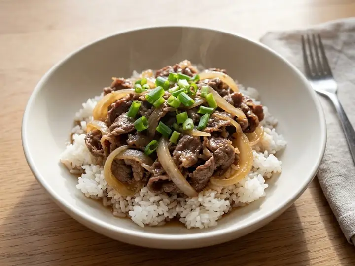

Japan · Beef · No. 404
Japanese-Style Gyudon Beef and Onion Rice Bowl
A single portion of Japanese cooking, ready in 20 minutes with 8 minutes of prep. Written for one, so there is nothing to halve and nothing to waste.
Method
- 1
Combine the soy sauce, mirin, sake, sugar and stock in a small saucepan and bring to a simmer.
- 2
Add the sliced onion and simmer for 4–5 minutes until softened.
- 3
Add the beef slices and simmer for 3–4 minutes until just cooked through, skimming any froth.
- 4
Spoon the hot rice into a bowl and ladle over the beef, onion and sauce.
- 5
Taste and adjust the seasoning.
- 6
Top with the spring onion and pickled ginger to serve.
Find more like this